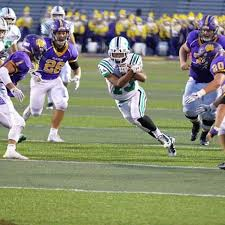
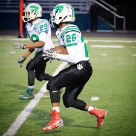

I am a junior at Mayfield Highschool and I play football and run track. I've always had an interest in engineering and building things. I took my first engineering class my freshman year in highschool in the STEM program and I am still in it as a junior.
Freshman year was alot of trail and error as I was learning about coding and the design process.
Over time I became more experienced and now I am pretty educated in the field of engineering.  